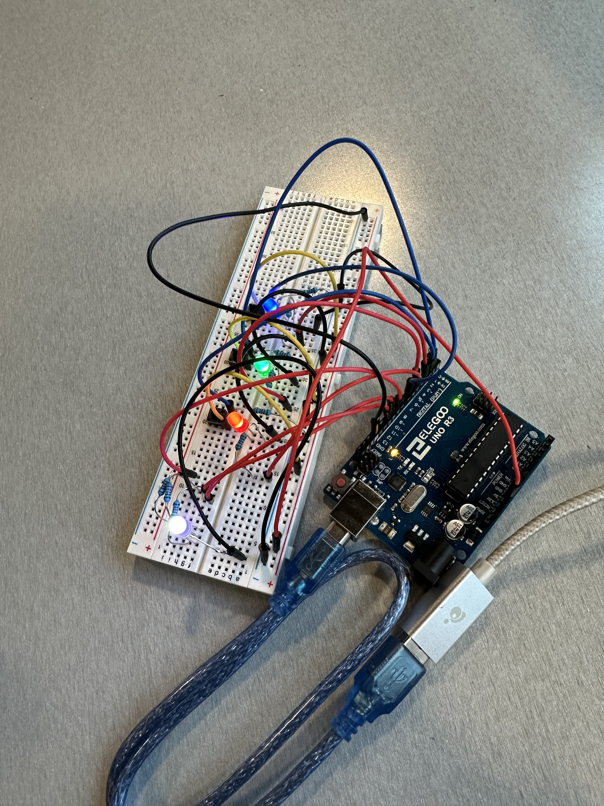
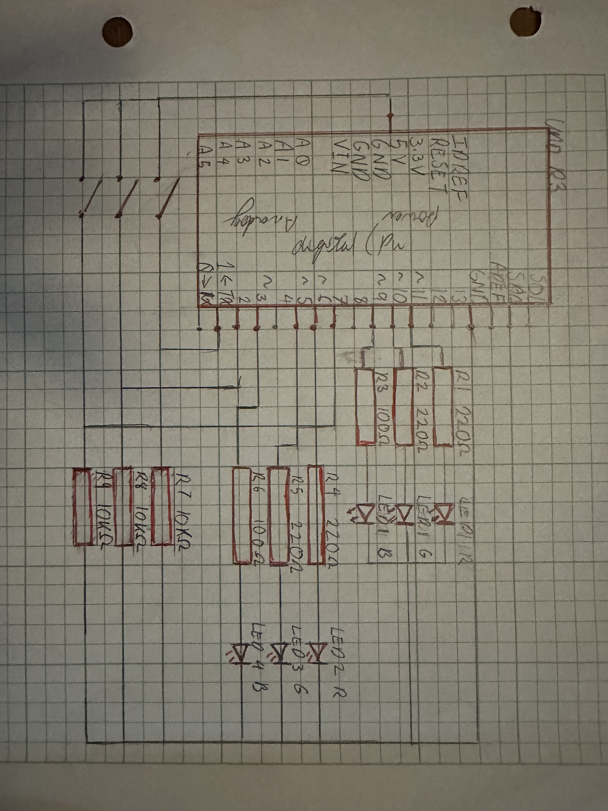
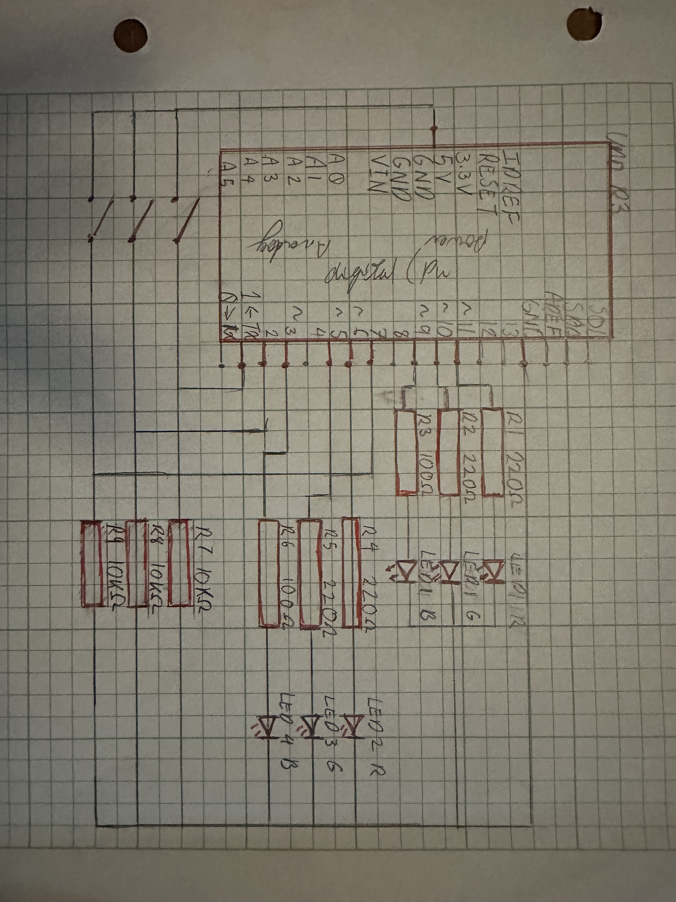
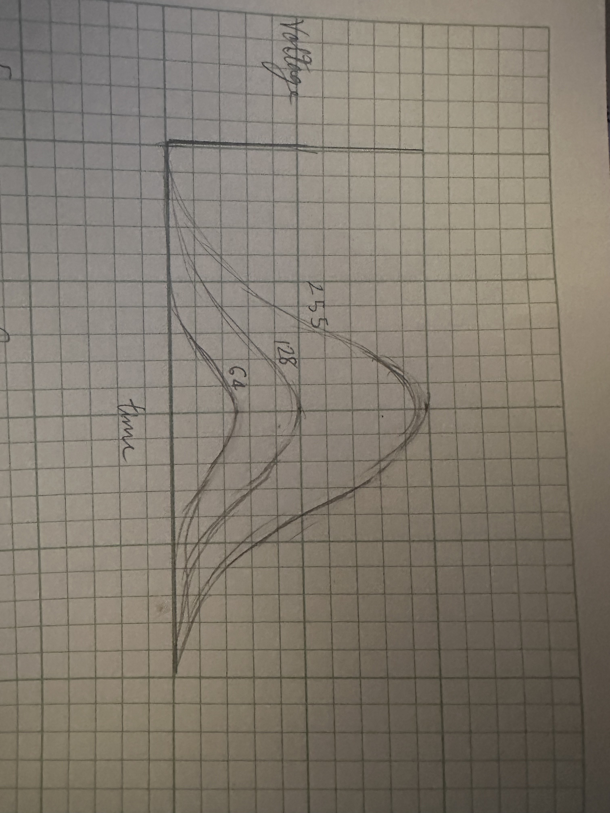

Skye's Assignment 2: Fade

 

The device allows the user to change the strength of each color in the mixed LED, and has independent LEDs to see the strenght of the individual parts.
The Blue LED has a higher voltage drop thus to have the same current in all LEDS the blue LED needs to be paired with a lower resistor of 100 compared to the 220. 10k resistors were used with the buttons to prevent short circuts
Code:
const int ledOutputRed = 11; //sets a variable to the pin for red in the mixed LED
const int ledOutputGreen = 10; //sets a variable to the pin for green in the mixed LED
const int ledOutputBlue = 9; //sets a variable to the pin for blue in the mixed LED
const int ledPinRed = 6; //sets a variable to the pin for the red LED
const int ledPinGreen = 5; //sets a variable to the pin for the green LED
const int ledPinBlue = 3; //sets a variable to the pin for the blue LED
const int buttonPinRed = 2; //sets a variable to the pin sensing the button for red
const int buttonPinGreen = 1;//sets a variable to the pin sensing the button for green
const int buttonPinBlue = 7;//sets a variable to the pin sensing the button for blue
int buttonStateRed = 0; // sets the red button state
int buttonStateGreen = 0; // sets the red button state
int buttonStateBlue = 0; // sets the red button state
int ledRed = 0; // sets the red amount to 0
int ledGreen = 0; // sets the green amount to 0
int ledBlue = 0; // sets the blue amount to 0
void setup() { // start of the container of the pins I want to initialize
pinMode(ledPinGreen, OUTPUT); // initializes digital pin 5
pinMode(ledPinBlue, OUTPUT); // initializes digital pin 3
pinMode(ledOutputRed, OUTPUT); // initializes digital pin 11
pinMode(ledOutputGreen, OUTPUT); // initializes digital pin 10
pinMode(ledOutputBlue, OUTPUT); // initializes digital pin 9
pinMode(buttonPinRed, INPUT); // initializes digital pin 2
pinMode(buttonPinGreen, INPUT); // initializes digital pin 1
pinMode(buttonPinBlue, INPUT); // initializes digital pin 7
void loop() { // start of the container of the code I want to repeat
buttonStateRed = digitalRead(buttonPinRed); // detects if the red button is pressed
buttonStateGreen = digitalRead(buttonPinGreen); // detects if the green button is pressed
buttonStateBlue = digitalRead(buttonPinBlue); // detects if the blue button is pressed
if (buttonStateRed == HIGH) { // if the red button is pressed the following code triggers
if (ledRed == 100) { // if the amount of red is 100 the next 4 lines trigger
digitalWrite(ledOutputRed, LOW);//turns the red content in the LED off
delay(500); //waits half a sec or else the code breaks
ledRed = 0; //resets the red amount to 0
else { // if the red amount is not 100 the next 5 lines trigger
ledRed = ledRed + 1; // adds one to the red amount
analogWrite(ledPinRed, ledRed + i); // makes the red LED the red amount
analogWrite(ledOutputRed, ledRed + i); //makes the mixed LED the red amount
delay(20); //waits 20 miliseconds
}
}
if (buttonStateGreen == HIGH) { // if the green button is pressed the following code triggers
if (ledGreen == 100) { // if the amount of green is 100 the next 4 lines trigger
digitalWrite(ledOutputGreen, LOW); //turns the green content in the LED off
delay(500); //waits half a sec or else the code breaks
ledGreen = 0; //resets the green amount to 0
else { // if the green amount is not 100 the next 5 lines trigger
ledGreen = ledGreen + 1; // adds one to the green amount
analogWrite(ledPinGreen, ledGreen); // makes the green LED the green amount
analogWrite(ledOutputGreen, ledGreen); //makes the mixed LED the green amount
delay(20); //waits 20 miliseconds
}
}
if (buttonStateBlue == HIGH) { // if the blue button is pressed the following code triggers
if (ledBlue == 100) { // if the amount of blue is 100 the next 4 lines trigger
digitalWrite(ledOutputBlue, LOW); //turns the blue content in the LED off
delay(500); //waits half a sec or else the code breaks
ledBlue = 0; //resets the blue amount to 0
else { // if the blue amount is not 100 the next 5 lines trigger
ledBlue = ledBlue + 1; // adds one to the blue amount
analogWrite(ledPinBlue, ledBlue); // makes the blue LED the blue amount
analogWrite(ledOutputBlue, ledBlue); //makes the mixed LED the blue amount
delay(25); //waits 20 miliseconds
}
}
}
Questions:
1: Draw a chart where the X axis is time and the Y axis is voltage. Draw 3 lines representing the voltage across an LED with analogWrite(led, 64), analogWrite(led, 128), and analogWrite(led,255).

2: Given your schematic, circuit, and firmware, assuming the only thing that draws current is your LEDs, how long would your circuit run if powered by a 1200 mAh battery?
6 hours and 14 mins. because I = V/R, I have 5 volts in 9 branches with 4 having 220 ohm resistors and 2 having 100 ohm resistors, and 3 having 10k resistors.